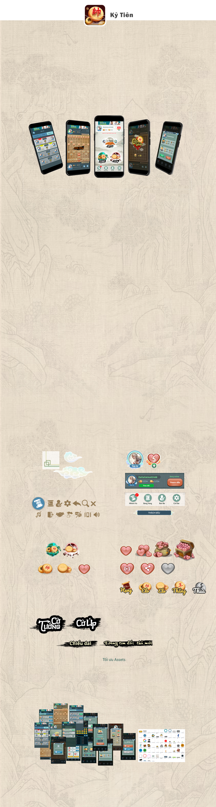

Khi nhận project này, tôi đã nói: “Con game này sẽ mang tiên khí”
Tại sao lại là tiên khí??
1: Trong văn hoá dân gian, hình tượng nhân vật gắn liền với cờ tướng luôn là các bậc trí giả, ẩn sĩ, tiên nhân. Họ đánh cờ ở những nơi có linh khí: non cao, suối biếc, dưới gốc cổ thụ trăm tuổi..
2: Những người chơi cờ tướng phần lớn là đàn ông, ở họ đều có một sự hoài cổ nhất định, thường có tư duy logic, thích phân tích, tính toán chiến thuật. Những người như vậy, họ thích ở trạng thái “tĩnh”, những cũng có nhu cầu thể hiện trí tuệ.
Concept thần thoại với lối minh hoạ cổ gợi nhắc về văn hoá chơi cờ nguyên bản với tính lịch sử cô đọng, đưa người chơi thoát khỏi khói lửa nhân gian, trở thành 1 bậc trí giả trước mỗi bàn cờ. Nó đem lại cảm giác thoát tục, cũng giữ được cốt lõi trí tuệ - chiến thuật của 1 bàn cờ tướng.
Hiện game đã xong nhưng chưa được release. Game thuộc bản quyền của Archer
Vùng nhìn + độ sáng màn hình + tương phản sắc là một vấn đề lớn cần giải quyết. Mọi thứ phải được cân bằng ở mức độ thoải mái, vì vậy, nhiều khi phải đánh đổi vẻ rực rỡ để lấy cảm giác dễ chịu, an toàn cho mắt. Nhất là với 1 game có độ “tĩnh” và trạng thái dừng ở 1 screen tương đối lâu như Cờ tướng.
Animation / Vfx là thứ không thể thiếu trong game. Nhưng cân bằng thời lượng animtion ở những user mới và user đã chơi một thời gian cũng là 1 vấn đề cần giải quyết. ở góc độ Art, đem lại cho user cảm giác thoải mái khi trải nghiệm UI và không gian gamet mới là mục tiêu hàng đầu.
UI: Asset cần được modul hoá và sử dụng lặp lại nhiều lần trong Ux của game. Ui cần đủ đơn giản để tránh rối mắt user, nhưng cũng cần vừa đủ chi tiết để đảm bảo đúng với concept, và lại càng cần rõ ràng hình thái để user nhận đúng chức năng.
Việc vẽ ra ra 1 concept phù hợp với game là sự sáng tạo của Art. Tuy nhiên, việc giao tiếp với front end để đưa concept đó thành game lại là câu chuyện lý trí hơn nhiều. Dev và Art luôn có 1 trận chiến về dung lượng và cách tạo compotnent.
Tối ưu assets bao gồm: tạo ra asset hỗ trợ nguyên lý của engine / Giới hạn bộ màu và điểm màu trong asset / hạn chế lượng asset tồn tại trong game ít nhất có thể / giảm dung lượng asset ở mức tối đa, nhưng vẫn đảm bảo được hiệu quả khi hiển thị trên device. “Kỳ Tiên” phát triển trên cocos, hệ thống điều chỉnh assets có những đặc thù, hiểu engine là việc cần thiết để art có thể đưa ra phương án xử lý assets hiệu quả nhất
Kỳ Tiên có khoảng 10 màn hình chính với 15 popup phụ cùng loạt hiệu ứng khá quanh co.
Tổng lượng assets giới hạn và giao được cho phía dev là 11Mb, trong đó có cả file gif/json/jpeg
Kỳ Tiên có một quá trình phát triển mà ở đó, mỗi cá nhân tham gia vào đều có những thử nghiệm của riêng mình. Nó có th ể là một sản phẩm tiềm năng mãi mãi không được public, nó cũng có thể là thế hệ tiếp theo của một sản phẩm khác đang tạo ra doanh thu cho chủ sở hữu.
Dù bất kể nó tồn tại ở dạng thức nào. Đây cũng là sản phẩm tôi thấy tự hào khi làm ra - đứa con út của tôi ở mảng 2D